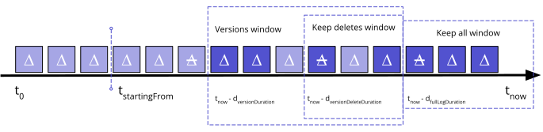

1. Introduction
An LDES client is a piece of software used by a consumer that accepts the URL to an entry point, and returns a stream of members of the corresponding ldes:EventStream.
The data stream emits the history that is available from this entry point, and once the consumer has caught up with the stream, it remains synchronized as new members are published.
The specification describes two modes for the client: either it fetches all updates since the previous synchronization run in an unordered fashion, either it does this while maintaining the chronological order.
In LDES, we extend the vocabulary of the W3C TREE hypermedia with specialized terms for dealing with append-only collections, referred to as event streams. For example, one can indicate what time-based property in the member is used for indicating the order of the event stream, indicate the retention policy as a promise from the producer to the consumer, or detail how to deal with version-based members.
2. Overview
A Linked Data Event Stream (LDES) (ldes:EventStream) is a collection (rdfs:subClassOf tree:Collection) of members that cannot be updated or removed once they are published, with each member being a set of RDF quads ([rdf-primer]).
This way, the collection of members becomes an append-only log or event stream.
Following the TREE specification, this event stream is published using one or more HTTP resources.
When more resources are used, these pages, or tree:Nodes, will be structured according to a search tree.
Therefore we will use the terms root node for the first page, and subsequent node for every next page in the structure.
In the root node, the client will expect these properties to be described on the ldes:EventStream entity:
-
ldes:timestampPath: this is a SHACL property path (all further *Path properties are as well) that sets the chronological time with axsd:dateTimeliteral within each member. This timestamp determines the chronological order in which members of the event stream are added. Whenldes:timestampPathis set, no member can be added to the LDES with a timestamp earlier than the latest published member. -
ldes:sequencePath: when the LDES producer wants to make clear what the ordering is within members with the same timestamp for theldes:timestampPath, this property defines, based on the [xpath-functions-31] comparison operator, what xsd-literals define the order of processing. When noldes:timestampPathhas been set, theldes:sequencePathdefines the sequence for all members in the LDES. -
ldes:versionOfPath: when your entities are versioned, this property points at the object that tells you what entity it is a version of (e.g.,dcterms:isVersionOf). -
ldes:versionTimestampPath: when those versions are not published chronologically, LDES providers have the possibility to indicate a different version timestamp to establish the latest version. -
ldes:versionSequencePath: when the versions do not follow the order inldes:timestampPathandldes:sequencePath, and for whenldes:versionTimestampPathare the same for multiple members, or for when this property is not set. E.g., for out of order publishing of1→2, in which2may have been published by the server before1. -
tree:shape: a [SHACL] shape that can be used to select a search tree in the discovery phase, as well as to validate the members in the event stream. Thesh:NodeShapelinked validates each target of thetree:memberproperty. A validator in a consumer pipeline MUST ignore other targets. -
tree:view: connects the collection to the current page, or points to one specific root node after dereferencing theldes:EventStreamidentifier.
In the root node, the current node identified by the URL of the page (a provider can achieve this simply by using a relative IRI <>) will be further described using these properties:
-
ldes:retentionPolicy: indicates a retention policy (see next the dedicated chapter [](#retention)). -
tree:viewDescription: can as well contain the retention policy, or other context data about this view of the LDES (e.g., thedcat:Distribution, thetree:SearchTree, or theldes:EventSource) as a named entity. This is useful for example if a producer would like to disambiguate the IRI for theldes:EventSourcefrom the roottree:Node. By default, thetree:viewDescriptionpoints at the root node.
In any node, root node or subsequent node, the client expects to find
-
members (0 or more) of the
ldes:EventStreamusing thetree:memberproperty. The subject is the event stream instance and the object is the root focus node of a member. -
relations (0 or more) of the
tree:Nodethe client is currently on, using thetree:relationproperties, containing a description of thetree:Relations from this node to subsequent nodes.
Note: In an ldes:EventStream, the object of the tree:member triple can only be an IRI as this IRI will be used in the state to check whether the member has already been emitted or not.
ex : Observations a ldes : EventStream ; ldes : timestampPath sosa : resultTime ; ldes : pollingInterval 60 ; # Each minute, new results are expected tree : shape ex : shape1.shacl ; tree : view <> ; tree : member ex : Observation1 . ex : Observation1 a sosa : Observation ; sosa : resultTime "2026-01-01T00:00:00Z" ^^ xsd : dateTime ; sosa : hasSimpleResult "..." .
ex : AddressRecords a ldes : EventStream ; ldes : pollingInterval 86400 ; # Each day, new addresses are expected ldes : timestampPath dcterms : created ; ldes : versionOfPath dcterms : isVersionOf ; tree : shape ex : shape2.shacl ; tree : view <> ; tree : member ex : AddressRecord1-activity1 . ex : AddressRecord1-activity1 dcterms : created "2026-01-01T00:00:00Z" ^^ xsd : dateTime ; adms : versionNotes "First version of this address" ; dcterms : isVersionOf ex : AddressRecord1 . ex : AddressRecord1-activity1 { ex : AddressRecord1 dcterms : title "Streetname X, ZIP Municipality, Country" . }
More specific server documentation should be found in a Server Primer (to do), such as containing a link to the JSON-LD context, official SHACL shapes for LDES to validate your pages, best practices for publishing an LDES for reaching an optimal performance, best practices for enveloping your data using named graphs, how to build a status log for the use case of an aggregator or harvester, etc.
3. Synchronization algorithm
There are multiple modes in which a client MAY operate.
The client MUST have an unordered mode and/or an ordered ascending mode.
It MAY also have any other mode not specified in this document.
Ordered modes are only possible with ldes:EventStreams that have a ldes:timestampPath and/or ldes:sequencePath.
A synchronization run is one complete invocation of the client’s traversal logic, visiting all nodes that are relevant given the current state. During this synchronization run it emits the newly found members.
A client SHOULD check whether an ldes:pollingInterval was set on the LDES. If it is, the client SHOULD use this amount of seconds (xsd:integer) to set the time to keep between synchronization runs.
Note: Unordered will be straightforward to implement, while ordered modes will be more challenging due to the need for a more precise interpretation of relations and paths. Nevertheless, this will come with more functionality. It is up to a developer of a client to decide what functionalities they decide to offer.
A client MUST have a way to indicate to further processors in a consumption pipeline that a synchronization run has been finalized. In order to prevent inconsistencies when reusing the result of the pipeline when not in ordered ascending mode, a consumer pipeline SHOULD wait for this finalization flag before committing those members at once into their system. In ordered ascending mode, a consumer can fully process each member as it comes in, except for when the member is part of a transaction.
A client MUST take an IRI I as the only required argument.
I can denote the event stream itself, the root node, a redirect to the root node, or an overview page with exactly one tree:view property in the page.
In case there is no state yet, a client MUST perform an initialization run.
3.1. Initialization run
The client MUST dereference I (see HTTP Requests - Responses).
After dereferencing the IRI, the client MUST look for the patterns ?s tree:view <> with <> the base IRI (after redirect). If this pattern was matched exactly once, <> is to be considered the root node, and ?s is to be considered the ldes:EventStream IRI. In case it was matched multiple times, an error MUST be returned. If this pattern is not found, then it MUST look for the pattern I tree:view ?o instead. If this pattern matches exactly once, then I is to be considered the ldes:EventStream IRI and ?o the root node. In this case, the IRI bound to ?o MUST be dereferenced. In case multiple or no matches were found, an error SHOULD be returned.
The client’s aforementioned IRI dereferencing step MAY be extended with a source selection mechanism.
After processing the root node, the client MUST initiate a state object (see state management) with the context information (see context information) as found in the root node.
The client MUST proceed processing the root node as any other node: i.e. processing the members, traversing the relations, and doing the state management.
For every subsequent run, a client MUST consult the state and continue from there.
3.2. State management
Note: In this section we do not mandate how exactly state management needs to be done, but provide some functionalities that must be implemented.
A client MUST ensure a member is only emitted once.
Note: Keeping a list of all emitted members forever will become problematic for large LDESs and slow down emitting the members. Instead, a client in unordered mode can assume that members found on immutable pages can safely be removed from the state after the run is finished. A client in ordered ascending mode can simply use the timestamp and/or sequence number of the last emitted member for that purpose. Mind that still the members that have exactly this timestamp and/or sequence number will still need to be kept in the state.
A tree:Node is considered immutable, when re-fetching it will not result in new members.
For every tree:Node, a client SHOULD check whether it is immutable by first checking whether
-
the triple
<> ldes:immutable true .is set; then whether -
the cache-control HTTP response header is set to immutable; and finally
-
a client MAY check whether the
tree:Relationwith atree:pathequal to theldes:timestampPaththat pointed us to thetree:Nodehad an upper bound that is earlier than the time of the latest processed member.
A client SHOULD ensure an immutable tree:Node is not fetched more than once.
Note: Keeping a list of all immutable pages forever will become problematic for large LDESs.
A client MUST ensure it can resume from a previous run. It SHOULD do so by keeping a frontier of pages that are not (yet) immutable. In ordered mode, it MAY also use timestamp and sequence path of the last member as a bookmark.
A client MUST keep context information such as the identifier of the event stream and the root node, the SHACL shape of the event stream, or the retention policy of the root node, cf. the chapter on Context Information.
A client SHOULD keep statistics such as the number of members emitted and the date-time of the last run.
A client MUST have a mechanism to communicate this context information and statistics to other processors in the pipeline.
When a tree:Node is not immutable, the etag SHOULD be kept if this is set in the response.
3.3. HTTP requests and responses
A client MUST support HTTP responses in at least [n-quads], [n-triples], [trig], [turtle] and [json-ld]. For JSON-LD external contexts, the client SHOULD implement HTTP caching.
An Accept request header MUST be set.
A client SHOULD inspect the cache-control header to see whether it is set to immutable.
A client MUST follow redirects.
A client SHOULD support If-None-Match request header using the etags stored in the state, and process the 304 Not Modified response accordingly.
For the following status codes, the client MUST implement a retry mechanism with a back-off strategy:
-
408 Request Timeout -
425 Too Early -
429 Too Many Requests -
500 Internal Server Error -
502 Bad Gateway -
503 Service Unavailable -
504 Gateway Timeout
A client MAY implement authorization and respond to a code like 401 with an authorization routine.
A client MUST process 410 Gone as a page with an empty set of relations and an empty set of members.
A client MUST abort and throw an error on any other 4xx or 5xx range status codes.
3.4. Emitting members
In unordered mode, the client SHOULD emit a member as soon as it is extracted.
In ordered mode, the client MUST ensure no other member can be still discovered that could precede the member that is to be emitted. Extra conditions as documented in the next section MUST be checked before emitting it.
A client MAY implement support for more specialized content types and profiles.
For example, the TREE profile specification promises to a parser that the member quads are going to be grouped together, and delimited by the tree:member quad.
Additionally to this specification an LDES client can assume the members will be in chronological ascending order and does not have to sort them anymore.
Without a specialized profile or content type that can indicate a “grouping of quads”/a “message”/a “frame”, a client MUST extract a description of the members as follows:
Once the tree:Node has been fully parsed, a client MUST make a list of all member IRIs matching <ES> tree:member ?m with ES being the IRI of the LDES.
Each match of this pattern is called a focus node.
For each focus node, a client MUST look up the subject-based star pattern (<m> ?p ?o) in the default graph, and all quads in the named graph m (?s ?p ?o <m>).
For each match where o is a blank node, the algorithm is to be repeated recursively with o being the new focus node.
A client MUST ensure a blank node is not processed twice.
A client in ordered mode that reads data from a tree:Node without a specialized profile or content type, MUST order the members according to the ldes:timestampPath and/or ldes:sequencePath itself.
ex : EventStream a ldes : EventStream ; ldes : timestampPath dcterms : created ; tree : member ex : Member1 . ## Member1 quads ex : Member1 a ex : Record ; dcterms : created "2027-01-01T00:00:00Z" ^^ xsd : dateTime ; ex : hasDetail _ : bDetail ; ex : hasSignature _ : bSignature . ex : Member1 { _ : bDetail ex : detailValue "Some detail" . } _ : bSignature { ex : Sig1 ex : signatureValue "MEUCIQDh..." ; ex : signsNamedGraph ex : Member1 ; ex : signatureAlgorithm "RS256" . }
3.5. Traversing the search tree
3.5.1. Unordered
The relations R MUST be discovered using this pattern: <> tree:relation ?r with <> being the current page and R the set of matches of r.
For each r in R the pattern ?r tree:node ?n MUST be matched.
Each distinct n MUST be further dereferenced and processed.
3.5.2. Ordered
A client in ordered mode MUST be able to find the matching objects from a SHACL property path as this functionality is required for interpretting the paths in the TREE/LDES and SHACL specifications.
The client in ordered mode MUST in the initialization phase check whether there is an ldes:timestampPath and/or ldes:sequencePath set. If not, it MUST return an error as order cannot be guaranteed.
A client SHOULD implement a priority queue of next links to follow by interpretting these tree:Relation subclasses related to time literals:
-
tree:GreaterThanRelation: later in time -
tree:GreaterThanOrEqualToRelation: later in or at the same time -
tree:LessThanRelation: earlier in time -
tree:LessThanOrEqualToRelation: earlier in or at the same time
<> tree : relation _ : b0 , _ : b1 . _ : b0 a tree : GreaterThanOrEqualToRelation ; tree : node <2026> ; tree : path sosa : resultTime ; tree : value "2026-01-01T00:00:00Z" ^^ xsd : dateTime . _ : b1 a tree : LessThanRelation ; tree : node <2026> ; tree : path sosa : resultTime ; tree : value "2027-01-01T00:00:00Z" ^^ xsd : dateTime .
A client MUST combine multiple relations to the same node using a logical AND.
A client MUST check whether the ldes:timestampPath is used in the tree:path.
Only then the relation can be used for ordering.
Note: A link to a tree:Node with only a relation that is not supported (e.g. a tree:GeospatiallyContainsRelation) will have to be prioritized right away, as following this link may result in members that are earlier than any other member found elsewhere.
As an addition to transactions text in the next chapter, the client in ordered ascending mode MUST ensure that the member that finalizes the transaction is emitted as the last member when there are multiple members on the same ldes:timestampPath and/or ldes:sequencePath.
4. Context information
In this chapter we extend the context information described in the overview above with more advanced features and more details where needed.
4.1. Versions and transactions
Consumers can use the LDES version properties to decide what action to take.
E.g., when the consumer understands the members are versioned, it can upsert the members on each update.
If it understands something was created instead of updated, it can just add it into the store without removing statements first, and when a deletion comes in, it knows it can remove the statements associated with the previous insert or upsert.
To that extent, on the ldes:EventStream entity, these properties can be used, which are further explained in the vocabulary.
-
ldes:versionOfPath- such asdcterms:isVersionOforas:object -
ldes:versionDeleteObject- such asas:Delete -
ldes:versionCreateObject- such asas:Create -
ldes:versionUpdateObject- such asas:Update -
ldes:versionDeletePath- defaults tordf:type -
ldes:versionCreatePath- defaults tordf:type -
ldes:versionUpdatePath- defaults tordf:type
ldes : versionOfPath ldes : versionCreateObject ldes : versionUpdateObject ldes : versionDeleteObject ex : AddressRecords a ldes : EventStream ; ldes : timestampPath dcterms : created ; ldes : versionOfPath dcterms : isVersionOf ; ldes : versionCreatePath rdf : type ; ldes : versionCreateObject as : Create ; ldes : versionUpdatePath rdf : type ; ldes : versionUpdateObject as : Update ; ldes : versionDeletePath rdf : type ; ldes : versionDeleteObject as : Delete .
A consumer can also understand how to process the event stream in a way that the resulting knowledge graph will be consistent, by interpreting transactions using these properties:
-
ldes:transactionPath- points at an identifier for the transaction. The result of evaluating the path can be a literal or a IRI. -
ldes:transactionFinalizedPath- points at the object -
ldes:transactionFinalizedObject- the value that the object needs to be in order to be finalized. Defaults to the"true"^^xsd:boolean.
ldes : transactionPath ldes : transactionFinalizedPath ldes : transactionFinalizedObject ex : LDES a ldes : EventStream ; ldes : timestampPath as : updated ; ldes : transactionPath ex : transactionId ; ldes : transactionFinalizedPath ex : transactionEnded ; ldes : transactionFinalizedObject true ; tree : view <> . ex : Observation1 a sosa : Observation ; as : updated "2026-01-01T00:00:00Z" ^^ xsd : dateTime ; ex : transactionId "txn-123" ; ex : transactionEnded false . ex : Observation2 a sosa : Observation ; as : updated "2026-01-01T01:00:00Z" ^^ xsd : dateTime ; ex : transactionId "txn-123" ; ex : transactionEnded true .
When the IRI in the object of the tree:member triple is also used as a named graph, an LDES consumer MAY assume the payload of the upsert is in the named graph.
A consumer MUST implement a way to find back this group of triples in case an update or deletion comes in.
4.2. Retention policies
The goal of a retention policy is to indicate in what way a specific view will not be able to provide a complete history of the event stream to the consumer. This can help a consumer in the discovery phase to pick an specific LDES view, or help the consumer to detect non-viable synchronization set-ups.
When no retention policy is provided in the root node, the consumer MUST assume that all members, that have once been added to the ldes:EventStream, are still available from this root node.
When a retention policy is provided however, a consumer MUST assume it will not be able to find members outside of the retention policy.

ex : LDES a ldes : EventStream ; ldes : timestampPath as : updated ; ldes : versionOfPath as : object ; ldes : versionDeleteObject as : Delete ; ldes : versionCreateObject as : Create ; ldes : versionUpdateObject as : Update ; tree : view <> . <> a ldes : EventSource ; ldes : retentionPolicy [ ldes : fullLogDuration "P1Y" ^^ xsd : duration ; ldes : versionAmount 1 ; ldes : versionDeleteDuration "P1Y" ^^ xsd : duration ; ] .
A retention policy will be described on the root node.
The root node itself can contain this information using the property ldes:retentionPolicy, or the root node can refer through the property tree:viewDescription to an entity on which the retention policy is described using the property ldes:retentionPolicy.
When the client is processing the root node, it MUST look for a retention policy in both ways.
In the example above, the retention policy has been set on the root node (double typed as the ldes:EventSource).
When the ldes:retentionPolicy would refer to an entity without further statements in the current page, the client MUST assume this view keeps no members at all.
Multiple properties can then be added to make the scope of members that are kept larger:
-
ldes:startingFrom: this view only retaines members starting from thisxsd:dateTimewith timezone. In combination with other retention policies, this property only enforces the period before the timestamp for which the view will not retain any member. -
ldes:fullLogDuration: the duration from current time from which all members are retained. Only in combination withldes:startingFrom, and when theldes:startingFromtimestamp is within this window, not all members within the member are retained. No other properties can influence this property. -
ldes:versionAmount: the amount of versions to keep. -
ldes:versionDuration: the duration from current time from which an amount of version are kept, to be used together withldes:versionAmount. Defaults the duration of the full event stream. -
ldes:versionDeleteDuration: the period of time from current time the deletions in the event stream are retained. Before this period, deletions are not retained, regardless ofldes:versionAmountorldes:versionDuration.
When using the current time in calculations, the consumer MUST take into account a safe buffer to mitigate clock inaccuracies.
The ldes:timestampPath points at the timestamp in the member that can be compared with the current time minus the durations.
When the ldes:versionTimestampPath has been set, the two version durations are to be compared with this timestamp.
Historically, there are more specific type of retention policies that MUST remain supported although their use is discouraged in favor of the just introduced retention policy design. These retention policies types are:
-
ldes:DurationAgoPolicy: a time-based retention policy in which data generated before a specified duration is not retained. -
ldes:LatestVersionSubset: a version subset based on the latest versions of an entity in the stream. -
ldes:PointInTimePolicy: a point-in-time retention policy in which data generated before a specific time is not retained.
A ldes:LatestVersionSubset uses the property ldes:amount with as range an xsd:integer datatype, indicating the number of versions to keep. By default, this value is set to 1.
A ldes:PointInTimePolicy uses a ldes:pointInTime with an xsd:dateTime-typed literal to indicate the point in time on or after which data is kept when compared to a member’s timestamp.
5. Vocabulary
Next to re-using terms from the tree: vocabulary, the ldes: namespace introduced in this document provides a couple of new terms.
The base IRI for LDES is https://w3id.org/ldes#, and the preferred prefix is ldes:.
There is a Turtle version available at https://w3id.org/ldes#Vocabulary.
5.1. ldes:EventStream
The class ldes:EventStream is a subclass of tree:Collection. The specialization being that all members are immutable, and thus that this tree:Collection is append-only.
5.2. ldes:timestampPath
The path to the xsd:dateTime literal in each member that defines the order of the event stream.
Domain: ldes:EventStream
Range: a SHACL property path
5.3. ldes:sequencePath
The path to an xsd literal in each member that defines the order of the event stream in addition to the ldes:timestampPath.
Domain: ldes:EventStream
Range: a SHACL property path
5.4. ldes:pollingInterval
The amount of seconds the client should keep in-between synchronization runs.
Domain: ldes:EventStream
Range: xsd:integer
5.5. ldes:versionOfPath
The path to the IRI in each member that defines the entity of which this member is a version.
Domain: ldes:EventStream
Range: a SHACL property path
5.6. ldes:versionTimestampPath
For out of order event streams, this defines the path to the xsd:dateTime literal in each member that defines the order of versioned members.
Only relevant when the ldes:versionOfPath has been set.
Domain: ldes:EventStream
Range: a SHACL property path
5.7. ldes:versionSequencePath
For out of order event streams, this defines the path to an xsd literal in each member that defines the order of the event stream in addition to the ldes:versionTimestampPath.
Domain: ldes:EventStream
Range: a SHACL property path
5.8. ldes:EventSource
The class ldes:EventSource is a subclass of dcat:Distribution, the specialization being that this is a feed that uses a chronological search tree to make available a Linked Data Event Stream in order.
An ldes:EventSource can only be published on LDESs that have a ldes:timestampPath set, and thus will publish their entities in this chronological order.
5.9. ldes:immutable
Re-fetching this tree:Node will not result in new members.
Domain:: tree:Node
Range:: xsd:boolean
5.10. ldes:retentionPolicy
Links to a retention policy.
Domain: Preferably the root node. Alternatively it can occur on any type of entity that is linked from the root node using tree:viewDescription.
Range: ldes:RetentionPolicy
5.11. ldes:RetentionPolicy
The class for a retention policy that indicates how long members are preserved in this search tree.
5.11.1. ldes:startingFrom
The search tree only keeps members starting a certain timestamp.
Domain: ldes:RetentionPolicy
Range: xsd:dateTime with a timezone
5.11.2. ldes:versionDuration
The search tree only keeps its versions, for which an ldes:versionAmount MUST have been set, only during a specific window.
Domain: ldes:RetentionPolicy
Range: xsd:duration
5.11.3. ldes:versionAmount
The number of versions to keep. This MUST be a number greater than 0.
Domain: ldes:RetentionPolicy
Range: xsd:integer > 0
5.11.4. ldes:versionDeleteDuration
The search tree only keeps its deletions for a certain duration.
Domain: ldes:RetentionPolicy
Range: xsd:duration
5.11.5. ldes:fullLogDuration
The search tree keeps its full log for a certain duration.
Domain: ldes:RetentionPolicy
Range: xsd:duration
5.11.6. Former retention policies terms
-
ldes:DurationAgoPolicy: A retention policy class that uses anxsd:durationliteral to document a sliding window of data. -
ldes:LatestVersionSubset: A retention policy class that select an amount of versions based on the versionOfPath. -
ldes:amount: The number of versions to keep. This MUST be a number greater than 0.-
Domain:
ldes:LatestVersionSubset -
Range:
xsd:integer
-
-
ldes:PointInTimePolicy: A retention policy class that indicates members are kept starting on a certain point in time. -
ldes:pointInTime: The point in time from which members will be available starting from this root node.-
Domain:
ldes:PointInTimePolicy -
Range:
xsd:dateTimeincluding an explicit timezone
-
5.12. Terms for versioning and transactions on top of ldes:EventStream
5.12.1. ldes:versionCreatePath
Path indicating where you can do an object check on whether the member represents a create. Defaults to rdf:type.
5.12.2. ldes:versionUpdatePath
Path indicating where you can do an object check on whether the member represents an update. Defaults to rdf:type.
5.12.3. ldes:versionDeletePath
Path indicating where you can do an object check on whether the member represents a delete. Defaults to rdf:type.
5.12.4. ldes:versionCreateObject
If the RDF object matches the object in the version create path, the member represents a create.
5.12.5. ldes:versionUpdateObject
If the RDF object matches the object in the version update path, the member represents an update.
5.12.6. ldes:versionDeleteObject
If the RDF object matches the object in the version delete path, the member represents a delete.
5.12.7. ldes:transactionPath
Path indicating how a member indicates whether it is part of a transaction.
5.12.8. ldes:transactionFinalizedPath
Path indicating whether the transaction has been finalized.
5.12.9. ldes:transactionFinalizedObject
If the RDF object matches the object in the transaction finalized path, the member indicates the transaction has been finalized.